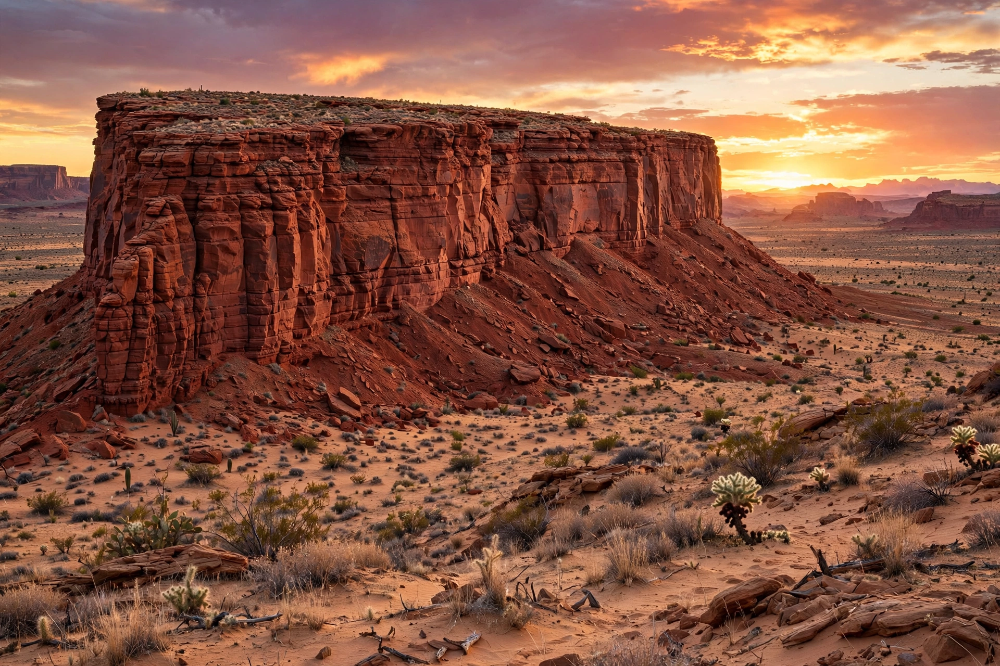

A mesa is an isolated, flat-topographical landform that is wider than it is tall, having steep, often vertical sides and a flat top. The term comes from the Spanish word for "table", which the Spanish explorers of the American Southwest gave to the flat-topped hills they encountered. Mesas form in arid and semi-arid environments where horizontally layered sedimentary rock resists erosion differentially: a resistant caprock protects softer strata beneath, while surrounding material is worn away by water and wind.

Mesas develop when tectonic uplift exposes horizontal layers of sedimentary rock to erosion. The hard caprock — often sandstone, conglomerate, or basalt — shields the softer shale or mudstone underneath. As erosion eats away at the edges, a plateau may be dissected into mesas, and mesas in turn erode into smaller buttes (which are taller than they are wide) and finally pinnacles.
Famous mesas include those of Monument Valley and the Colorado Plateau in the United States, where cliff dwellings of the ancestral Pueblo peoples were built into their alcoves, as at Mesa Verde. The tepui of Venezuela, Mount Roraima among them, are mesa-like table mountains of Precambrian sandstone. Flat-topped seamounts called guyots are submarine analogues, and features resembling mesas have been identified on Mars.